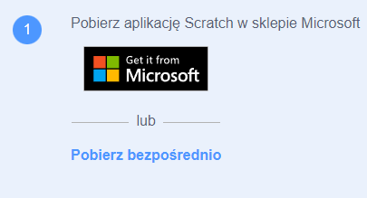

Poradnik jak zainstalować scratch.
- Najpierw wpisujemy link podany obok do przeglądarki lub klikamy obrazek poniżej ,,https://scratch.mit.edu/download’’.
- Jeśli spełniasz wymagania ,które musisz spełnić aby zainstalować scratch wybierasz system jaki masz spośród możliwych do wybrania i zjeżdżasz niżej oraz szukasz napisu ,,pobierz bezpośrednio’’ po czym go klikasz.

- Jeśli się już zainstalował wyszukujesz jego lokalizacji na dysku systemowym i klikasz w jego ikonkę dwukrotnie.
- Po kliknięciu go wybierasz dla kogo chcesz aby scratch został zainstalowany oraz klikasz guzik z napisem ,,zainstaluj''.
- Po zainstalowaniu wybieramy czy chcemy aby nam program się uruchomił czy nie oraz klikamy ,,zakończ’’.
- W momencie gdy program się uruchomi wybieramy opcję czy chcemy udostępniać dane zespołowi scratch czy nie chcemy oraz zamykamy okienko klikając przycisk ,,zamknij''.
- Program powinien wyglądać jak na grafice poniżej.